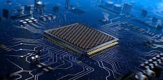

Оптические компьютеры – это устройства, использующие свет для обработки данных, и они представляют собой одно из наиболее перспективных направлений в современной вычислительной технике. Благодаря своим уникальным свойствам, оптические системы предлагают колоссальные преимущества перед тради-
ционными электронными компьютерами, такими как сверхвысокая скорость вычислений, энергоэффектив-
ность, меньшие размеры и большая пропускная способность.
Оптические компьютеры
